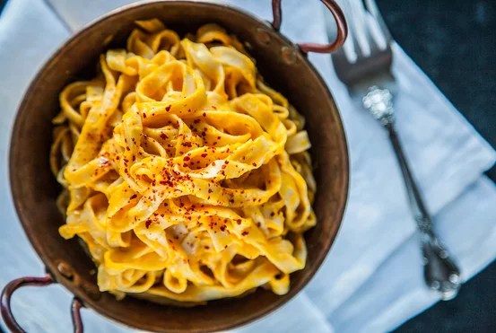

Home Page
Maggi Recipe

Description
There are days when we get lazy and that is when we create things like MAGGI Noodles Easy-Peasy. But, if you think we compromised on this one, you are wrong – you can never go wrong with your favourite MAGGI Noodles because there is #NothingLikeMAGGI! It’s amazing how tomatoes, onions, green peas and some cumin seeds, can make so much of a difference and the best part is – It’s as easy as one, two, three!
Ingredients
- MAGGI 2-Minute Noodles (Masala)
- MAGGI Rich Tomato Ketchup
- Oil
- Cumin seeds
- Tomato
- Onion
- Peas
- Salt
Steps
- Prepare ingredients as mentioned in the list.
- Heat the oil and then roast the cumin seeds in it. Then, toss in the tomatoes, the onions and cook them well. Add the peas and the MAGGI Tomato ketchup, give it a stir, and let them cook for a while!
- Cook one pack of MAGGI Masala Noodles (just follow the instructions on the pack!) and transfer it onto a dish.
- Put the cumin-tomato-onion mix right on top of the MAGGI noodles and you are ready to serve the easy peasy fun!